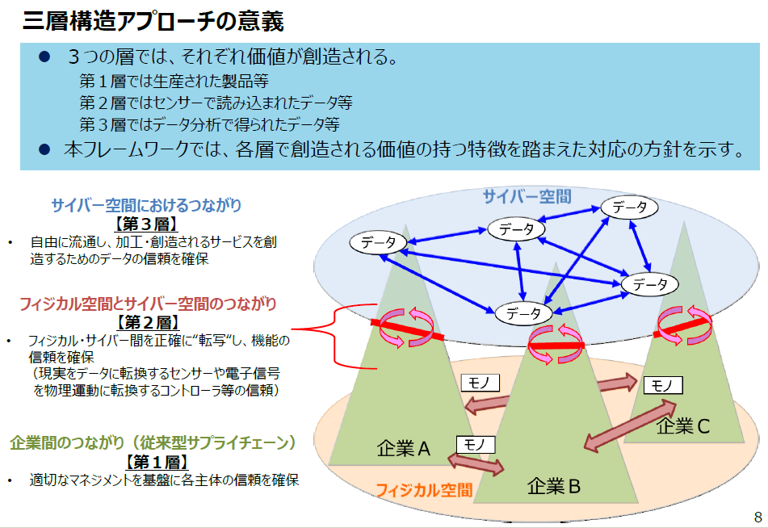
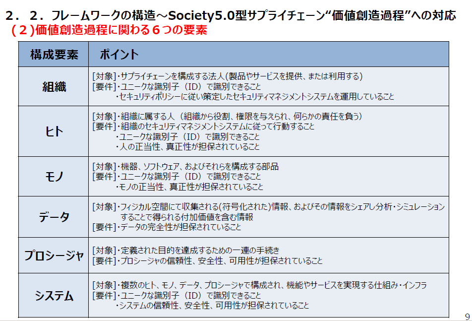
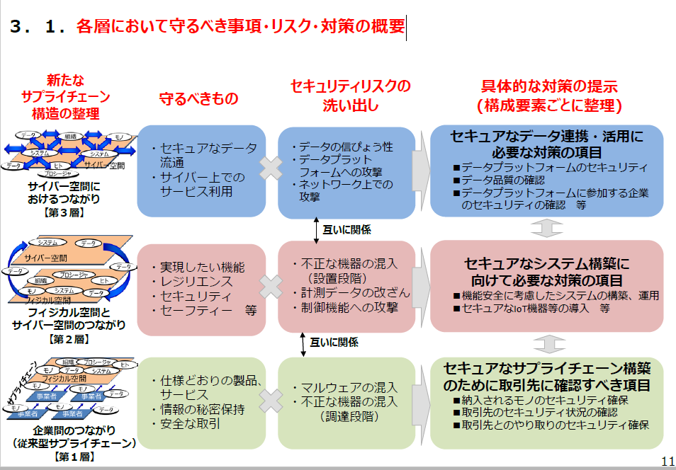
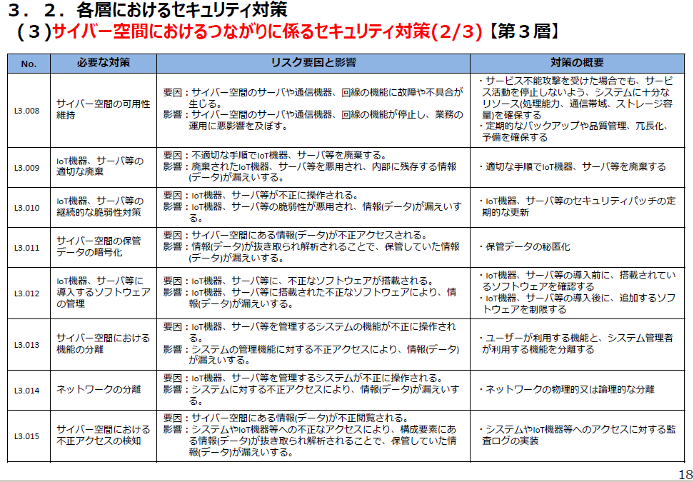

- Sec01-03 サイバーセキュリティ関連各種プレゼン資料
- 【2018年5月17日】
- サイバーセキュリティの現状と経済産業省としての取組
- 経済産業省サイバーセキュリティ・情報化審議官伊東 寛
- １．サイバー攻撃の現状
- ２．経済産業省の取組
- 経済産業省におけるサイバーセキュリティの主な取組
- 企業が取り組むサイバーセキュリティ対策の推進
- サイバーセキュリティ対策における経営者の役割
- サイバーセキュリティ経営ガイドライン Ver2.0
- サイバーセキュリティ経営ガイドライン Ver2.0
- ガイドライン改訂前の主な課題
- 事後対策の強化 ～検知・復旧対策の実施～
- サプライチェーン対策の強化
- （参考）欧米において強化される『サプライチェーン』サイバーセキュリティへの要求
- 事後対策の強化 ～インシデント発生時の対応～
- 重要１０項目の整理
- その他の改訂ポイント
- 中小企業の情報セキュリティ対策ガイドライン（平成28年11月15日公開）
- （参考）セキュリティ対策自己宣言「SECURITY ACTION」
- （参考）サイバーセキュリティ経営ガイドラインとの関係性
- IoTセキュリティガイドライン
- 重要インフラ事業者に対するサイバー攻撃情報共有体制（J-CSIP）
- 高度標的型サイバー攻撃を受けた組織への初動対応支援
- インシデントへの対応支援
- 産業サイバーセキュリティセンター
- ３．サイバーセキュリティ政策の方向性
-
- 産業サイバーセキュリティ研究会及びWGの全体構成
- （参考）サイバー・フィジカル・セキュリティ対策フレームワークの策定
- （参考）『サイバー・フィジカル・セキュリティ対策フレームワーク』のイメージ
-
- サイバー・フィジカル・セキュリティ対策フレームワークの概要
- 経済産業省商務情報政策局サイバーセキュリティ課
- １．はじめに~サイバーセキュリティを巡る状況の変化
- １．１．Society5.0、ConnectedIndustriesが実現する社会
- １．２．サイバー攻撃の脅威の増大
- ２．サイバー・フィジカル・セキュリティ対策フレームワークの考え方
- ２．１．フレームワークを策定する目的
- ２．２．フレームワークの構造～Society5.0型サプライチェーン“価値創造過程”への対応

- (１)価値創造過程が展開する産業社会の三層構造
- 三層構造アプローチの意義
- 
- (２)価値創造過程に関わる６つの要素
- 
- ３．Society5.0において必要なセキュリティ対策
- ３．１．各層において守るべき事項・リスク・対策の概要
- 
- ３．２．各層におけるセキュリティ対策
- (１)企業間のつながり（従来型サプライチェーン）に係るセキュリティ対策(1/2)【第1層】
- (２)フィジカル空間とサイバー空間のつながりに係るセキュリティ対策(1/3)【第２層】
- (３)サイバー空間におけるつながりに係るセキュリティ対策(1/3)【第３層】

- 

- ４．信頼の確保に向けて
- ４．１．フレームワークにおける信頼の確保の考え方
- (１)信頼の創出、信頼の証明、信頼のチェーンの構築と維持の関係のイメージ